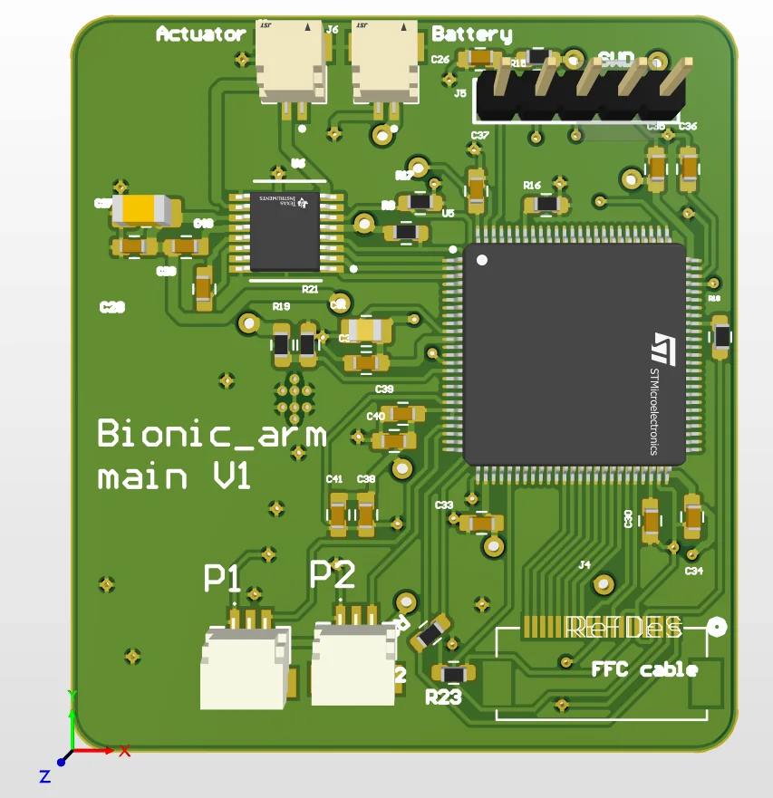

FPGA and hardware · Hardware build
8-channel EMG acquisition system for a prosthetic arm
Penn ADAPT is building a prosthetic arm controlled by surface EMG, the muscle signals in the user's arm. I co-lead the project and developed its EMG acquisition system.

The design covers acquisition and actuation: eight sensor modules with a 24-bit ADS1291 each, and an STM32H730 main board. EMG signals have driven the arm. The captures shown are single-channel, and an on-board gesture classifier is planned.
The problem
Penn ADAPT is building a prosthetic arm controlled by surface EMG. We wanted eight electrode pairs around the arm, sampled together. Dry-electrode EMG is microvolt-scale and sits beside SPI clocks and amp-level motor current.
What I built
The sensing side is designed as eight rigid modules. Each carries two electrode pads, a high-frequency input filter and a 24-bit TI ADS1291 ADC with a built-in programmable-gain amplifier. I contributed to the schematic and layout of the sensor modules in Altium.
The eight ADCs share one SPI bus and clock, with independent chip-select lines. Their START pins are tied so they sample together. I wrote the acquisition firmware, which configures the ADCs and reads each 48-bit frame into a per-channel data path. At 10 MHz, all eight reads, with overhead, are budgeted at 57.6 µs of the 1 ms period.
The STM32H730 main board has a DRV8874 H-bridge (up to 6 A peak) for the linear actuator. Its PWM outputs are for a dual-servo joint stage. I implemented the PWM and control interfaces, with current sensing and fault feedback from the H-bridge. I built a modular Raspberry Pi Pico interface for actuator prototyping and per-user calibration.
A 2S LiPo feeds 12 V actuator and 6 V servo rails, plus a separate 3.3 V sensing and logic rail. A buck converter feeds a TPS7A20 LDO on each module, to keep switching ripple off the analog supply.
Results
A 10 s capture from one ADS1291 input holds 20,000 samples at gain 6. The raw trace rides on a drifting DC offset near 60 mV.
Offline, a 20 to 450 Hz zero-phase band-pass with 60, 120 and 180 Hz notches removes it. After filtering, a separate capture shows six bursts. Their 100 ms RMS envelope peaks between about 200 and 300 µV and rests near 10 µV between bursts.
During sensor bring-up I saw a repeating high-frequency artifact on the waveform. With the oscilloscope I traced it to SCLK coupling into the analog front end, near an imperfect ground plane boundary. I rerouted the sensitive traces and tightened the ground isolation there, and the artifact disappeared.
Limits and next steps
Both captures are single-channel, and I have no eight-channel recording yet. The analysis plot warns that bursts are not automatically proven EMG.
The raw capture works out to 2 kSPS, twice the 1 kSPS in the timing budget. The artifact fix has no before-and-after measurement.
For the chip alone, the ADS1291 datasheet lists 1.3 µV RMS of input-referred noise at 1 kSPS and gain 6, inputs shorted. I have not measured noise on the boards. With an electrode attached, my filtered one-channel capture rests several times higher.
By calculation, acquisition adds about 4 ms of delay at the 1 kSPS design rate. The ADS1291 filter settles within four conversions, and the eight reads are budgeted at 57.6 µs. That leaves out the analysis window, the classifier and the actuator, and I have not measured latency.
EMG signals have driven the arm. The STM32H730 integration and the move to two servos are not finished. Next are on-board TinyML gesture classification and flexible or rigid-flex modules for better skin contact.